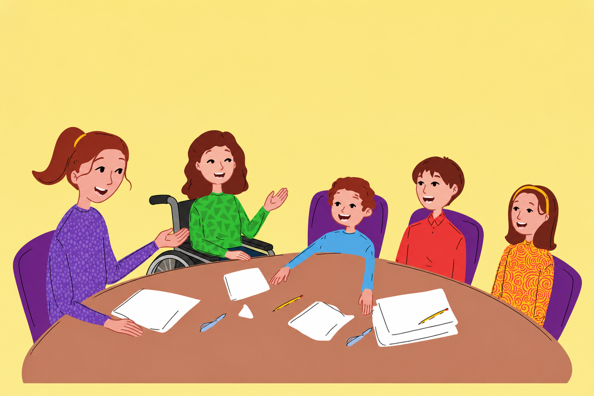

Mendime të ndryshme, vendime të përbashkëta
Në familje vendosim së bashku
Situata 2.
Në fund të vitit, traditë jona familjare është t’i dhurojmë njëri-tjetrit dhurata. Zgjedhim gjërat që janë më të domosdoshme e më të përdorshme. Vendosëm t’i bënim një surprizë mamasë. Në mbrëmje, mblodha motrat e vëllezërit dhe u thashë të shkruanin në një letër dhuratën që mendonin për mamanë. - Po si do të vendosim më pas? - pyeti vëllai i vogël
